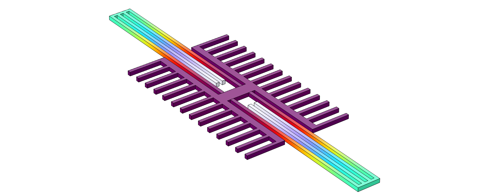

MEMS Resonator for Picogram-Scale Mass Sensing
Design and COMSOL-Backed Modeling for Resonant Mass Detection
Executive Summary
Designed and analyzed a silicon comb-drive MEMS resonator to detect picogram-scale mass changes via resonant frequency shifts. Established feasibility constraints under electrical and fabrication limits and used COMSOL to extract effective stiffness and mass for more accurate sensitivity estimates than lumped approximations.
Problem & Purpose
Picogram-scale sensing (e.g., bacterial mass loading) demands tight control of resonant behavior under practical constraints such as actuation voltage (≤100 V) and minimum feature sizes (~1 µm). Distributed stiffness and mode-shape effects can dominate at small scales, so simulation beyond lumped models is required to set credible detectability limits.
Approach
- Analytical sensitivity constraints: Related measurable frequency shift to meff and k to define detectability limits and guide geometry choices.
- COMSOL structural modeling: Extracted fundamental mode shapes plus effective stiffness and effective mass from distributed mechanics to refine sensitivity predictions.
- Tradeoff insights: Identified when spring mass and mode-shape participation invalidate common lumped assumptions for this geometry.
Key Outcomes
- Established feasibility constraints connecting geometry/material choices to achievable mass resolution.
- Identified a COMSOL-validated design point achieving a detectability margin of ≥ 1 for target picogram-scale loading.
- Demonstrated that simplified heuristics (e.g., fixed fractions of proof-mass participation) break down under strict size/stiffness constraints.
Tools & Skills
COMSOL · MEMS Modeling · Dynamics & Vibrations · Sensitivity Analysis · Design Tradeoffs